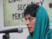

|
|
شیوا نظرآهاری برنده جایزه "تئودور هکر" شد
شنبه21 اسفند 1389
دویچه وله: یورگن تسیگر، شهردار شهر اسلینگن آلمان روز جمعه (۲۰ اسفند / ۱۱ مارس) اعلام کرد که شیوا نظرآهاری به خاطر فعالیت و شجاعتاش در نوشتن گزارشهایی در اینترنت در باره نقض حقوق بشر در ایران، این جایزه را دریافت خواهد کرد.
خانم نظرآهاری که اکنون به خاطر فعالیتهای حقوق بشری خود محکوم شده است، نمیتواند این جایزه را که در تاریخ ۱۷ آوریل اهدا میشود، شخصا دریافت کند. شهرداری شهر اسلینگن اعلام کرد که این جایزه در غیاب خانم نظرآهاری، به همکار او خانم پریسا کاکایی اهدا خواهد شد.
شهر اسلینگن این جایزه را هر دو سال یک بار به شخصیتهایی اهدا میکند که تلاشهای درخور توجهی در راه حفظ حقوق بشر، صلح و دمکراسی انجام دادهاند.